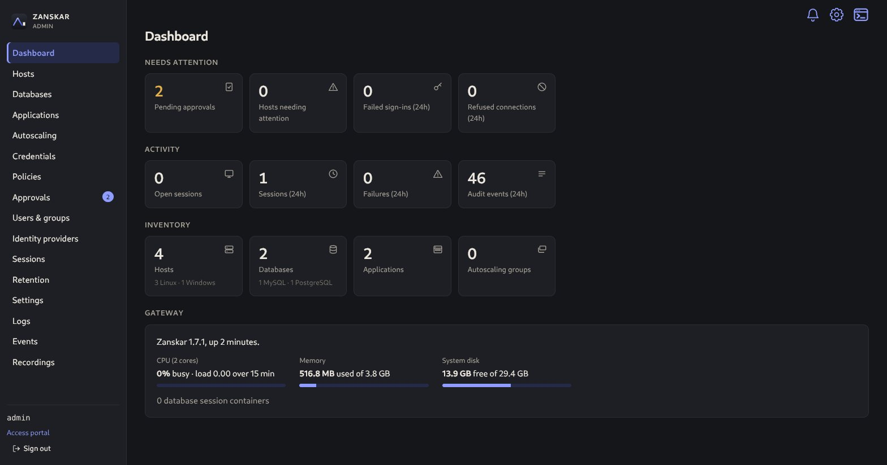
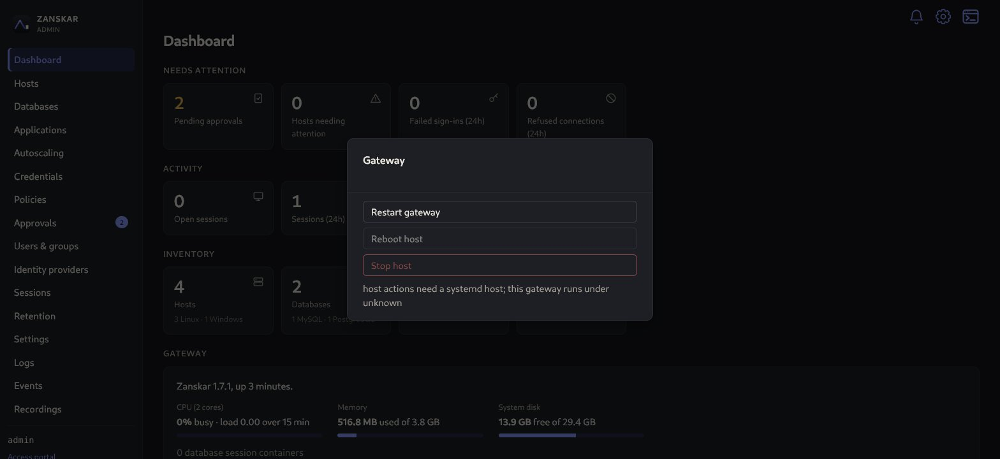
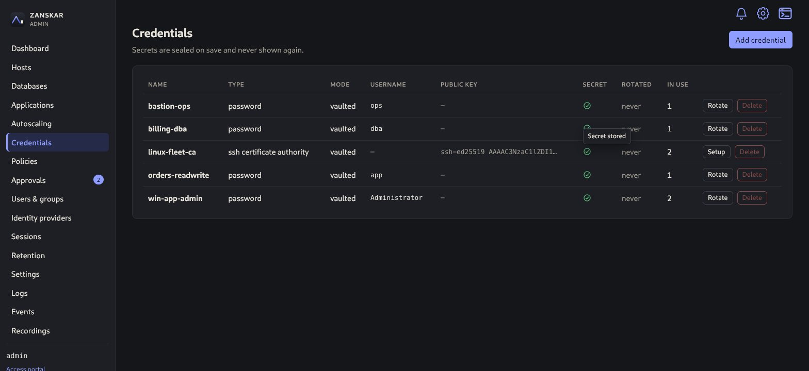
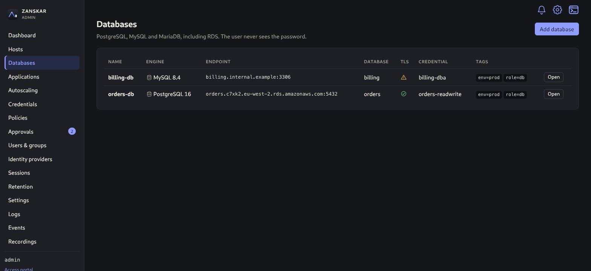
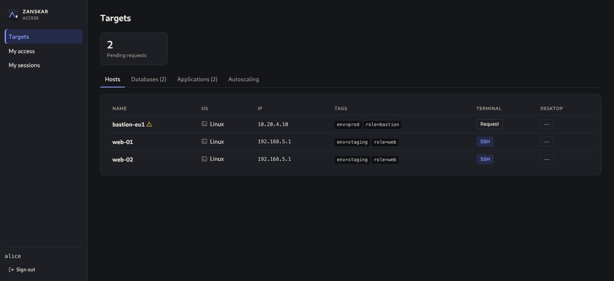
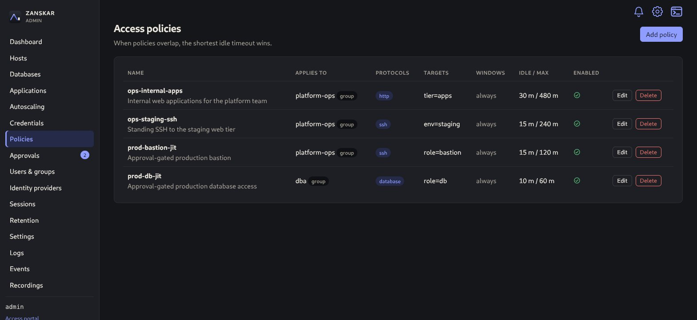
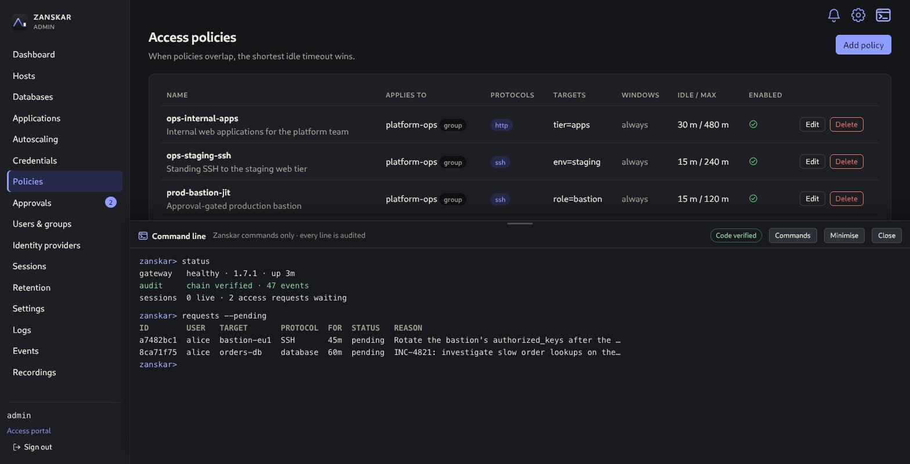

HOW-TO GUIDE
Run Zanskar day to day
Every task an administrator, auditor or user performs in Zanskar, in the order you meet them. It assumes the gateway is installed and you have signed in as the first admin.
Concepts in one minute
- Target
- A machine or database Zanskar can reach: a Linux or Windows host (SSH, RDP, VNC or WinRM), a PostgreSQL, MySQL or MariaDB database, or an AWS Auto Scaling group whose healthy instances become targets.
- Credential
- How Zanskar authenticates to a target: a vaulted password, an SSH private key, an SSH certificate authority, or a Windows domain credential. Users never see it.
- Policy
- Who may reach which targets, over which protocols, when, with which session limits, and whether clipboard and file transfer are allowed. A policy can also require approval for each session.
- Roles
- admin configures and reviews, auditor reviews only, user connects. The UI has three portals to match: Admin, Audit and the user portal. Links to switch between them sit under your name in the sidebar.
Sign in and enroll MFA
- Open the gateway URL and enter your username and password.
- On first sign-in Zanskar shows a QR code. Scan it with any TOTP app (1Password, Google Authenticator, Aegis) and enter the six-digit code. Enrollment completes only after a valid code, and the step survives a page refresh.
- Every later sign-in asks for password then code. Each code works once: wait for the next one rather than typing the same code again. Sign out from the sidebar; a sign-in also ends after 60 minutes without activity, and after 12 hours at most.
- Enrolment shows eight recovery codes once. Keep them somewhere safe: each one replaces a code from the app a single time, for when the phone is lost. An administrator can also reset your authenticator so you enrol again.
- Wrong passwords and wrong codes count together, and so does a wrong current password when you change your password: five in a row lock the account against new sign-ins for 15 minutes, though a session already signed in carries on. Five wrong codes also end that sign-in attempt, and you start again from the password.
- The logo at the top of the sidebar takes you back to the first page of the portal you are in, or to sign-in when your session has expired.
Signing in through your identity provider instead? An admin adds it under Identity providers (OIDC or LDAP/Active Directory) and maps provider groups to Zanskar groups. With single sign-on (OIDC) the provider owns your second factor: Continue with the provider on the sign-in page, prove yourself there, and Zanskar asks for no code of its own. Signing out of Zanskar signs you out of the provider too where the provider allows it, so the next sign-in asks for your password again. Directory (LDAP) accounts sign in at the form above and enrol a Zanskar authenticator, because a directory checks only the password.
The dashboard and the corner strip
An administrator signs in to the Dashboard: what waits on a decision, what is live, the fleet, and the gateway host itself. Each number opens the page that manages it, and the logo returns here from anywhere. Needs attention counts pending approvals, hosts waiting on a key or certificate decision, and the day's failed sign-ins and refused connections; Activity the open and recent sessions and audit events; Inventory the hosts by operating system, the databases by engine, and the autoscaling groups with their instance health. The Gateway card shows the running version, load, memory, free space on the disks the gateway writes (the recordings disk warns before recordings start failing), how many database session containers are running, and whether guacd answers. A review-only account lands on an audit dashboard instead: the day's failures and sessions, with a button that checks the whole audit chain. The access portal opens on Targets, with a strip of your own open sessions, pending requests and grants about to run out.

The top-right corner holds three controls. The bell lights when a newer release is published and opens the update panel (see updating). The gear offers Restart gateway, Reboot host and Stop host: each lets live sessions finish for the minutes you choose, asks you to type the gateway's hostname, and asks for a code from your authenticator unless you proved one in the last five minutes. Stopping is deliberate about its cost: nothing in the console can start a stopped machine, so starting it again needs the host or the cloud console. On Docker and Kubernetes the two host actions are greyed out, with the reason. The terminal icon opens the command line.

Your username at the bottom of the sidebar opens your account: name, email, roles, authenticator state and sign-in times.
Add users and groups
- Users & groups in the admin sidebar. Create a user with a username, display name and one or more roles. Leave the password blank and a one-time password is generated and shown once, for you to pass on; at their first sign-in the user must replace it, then enrol an authenticator, before reaching anything. Reset password on the same page does the same later.
- Create a group, then add members. Policies are written against groups (or a single user), so a sensible starting set is one group per team that needs access, plus one for approvers.
- Disable a user to block sign-in without deleting history; revoke their sessions from the same page if they are connected right now.
Sign in with Active Directory, LDAP or single sign-on
Zanskar can keep its own accounts, or accept the ones your directory already has. Identity providers in the admin sidebar takes an LDAP directory (Active Directory is the common case) or any OIDC provider. Several can be enabled at once: a sign-in tries local accounts first, then each enabled provider in turn, so adding a directory never locks out the admin you started with.
Active Directory over LDAPS, end to end
Two things have to exist on the directory side before you start: a read-only service account for Zanskar to search with, and LDAPS (or StartTLS) on the controller. Zanskar will not send a bind password over a plain connection.
- Make the bind account. Any ordinary user with read access to the tree you will search. It never needs to log in anywhere, so give it a long password and no privileges.
- Decide which directory groups grant what, and create a Zanskar group for each one first, under Users & groups. Policies are written against Zanskar groups; the provider only decides who lands in them. A group per role you actually grant, such as
ad-windowsandad-linux, keeps the mapping readable. - Add the provider. Name it after the directory, choose type ldap, and fill in:
Field Active Directory example URL ldaps://dc1.corp.example:636. Plainldap://is accepted only with StartTLS ticked.CA certificate (PEM) The certificate that signs the controller's LDAPS certificate, or the self-signed certificate itself. Required, unless you tick skip verification, which is for a lab and says so. Bind DN and password CN=zanskar-bind,OU=Service,DC=corp,DC=exampleand its password. Sealed in the vault like any other secret.Base DN Where users live, for example DC=corp,DC=example.User filter (&(objectClass=user)(sAMAccountName=%s)). Exactly one%s, which is the name typed at the login form.Username attribute sAMAccountNameon Active Directory,uidon OpenLDAP. The Zanskar username is this value, lowercased.Group attribute memberOf. Leave it blank to search the group tree instead, and then set the group base DN, filter and name attribute below it. - Test connection before saving anything else. It binds as the service account and reports what failed: a TLS problem, a bad bind, or a base DN that returns nothing. A green result means the directory is reachable and the credentials work.
- Choose what a new person gets. Create an account for each new person provisions the account the first time someone authenticates, or the first time the user sync lists them, with the roles you tick under Default roles. Leave it off and only people you have already created may sign in through the directory.
- Sync the users, if you want them before they sign in. Set People arrive to Listed by Zanskar on a schedule and choose how often (every 15 minutes unless you say otherwise). Each run lists everyone your user filter matches, with the
%sas a wildcard, as the bind account. A new person gets an account; a person removed from the directory, or disabled in Active Directory, has the account disabled and every session ended; one who comes back is enabled again. See how people arrive for the guard rails. - Map the groups. Add mapping gives a row: the directory's group in the first box, the Zanskar group picked by name in the second. For LDAP, write the group's full DN (
cn=ops,ou=groups,dc=corp,dc=example): a plain name matches every group of that name in any OU, so whoever can create a group anywhere in the directory could create one that matches. Case does not matter either way. Membership in the mapped groups is recalculated at every sign-in, so taking someone out of a directory group takes their access away the next time they log in. Groups you have not mapped are left alone, which means a person can be in a Zanskar group by hand and in mapped ones through the directory at the same time. - Sign in as a real person to check the whole path. They type their directory username and password at the normal login form. Zanskar provisions the account, puts them in the mapped groups, and then asks them to enrol an authenticator: a directory checks only the password, so for LDAP accounts the second factor is Zanskar's own. Their Targets page should show exactly what the policies for those groups allow, and nothing else.
Two failures are worth knowing in advance, because neither says what it is.
- Every LDAPS connection is reset. A domain controller listens on 636 as soon as it is promoted, but it binds a certificate only if it trusts the chain. A certificate the controller issued to itself does not chain to anything it trusts, so the handshake is reset with no TLS alert at all, and
openssl s_clientfails the same way Zanskar does. Put the certificate in the controller's own Trusted Root Certification Authorities store and restart theNTDSservice. A certificate from your internal CA does not have this problem. - The directory answers but no one can sign in. Almost always the user filter. Test it on the controller with
dsqueryorldapsearchusing the same base DN and bind account; if that returns nothing, Zanskar will not either.
OIDC single sign-on, with any provider
Type oidc works with any OpenID Connect provider: Okta, Microsoft Entra ID, Google, Auth0, Keycloak, Authentik, JumpCloud, PingOne, OneLogin and the rest. It needs the issuer URL, a client id and secret; discovery finds the rest. The username claim is usually preferred_username. Okta puts the person's login there and Entra ID their UPN, both email addresses, and an email address is a valid Zanskar username. Choose email only for a provider that verifies addresses: Zanskar uses it only when the provider says it has. With no username claim at all (Google sends none), the verified address is the username. The groups claim feeds the same group mapping as LDAP. Restrict who may use the provider with allowed email domains; the provider must have verified the address (its email_verified claim), so someone who can edit their own email cannot type their way in. Microsoft Entra ID never sends that claim: tick trust email addresses for it when your directory assigns the addresses. An address the provider marks unverified is never used, not even to make a username.
Once the entry is saved, the form shows its redirect URI, https://<your gateway>/api/v1/auth/oidc/<provider id>/callback, with a Copy button. Register it at the provider as a sign-in redirect. It is also where the provider sends the browser after signing it out: where the provider keeps a separate list of sign-out addresses (Okta, Auth0, Authentik), add it there too.
- The provider owns the second factor. A person who signs in with single sign-on proves themselves to the provider, with whatever MFA it enforces, and Zanskar asks for no code and no enrolment of its own. Require an authenticator in Settings applies to local and LDAP accounts only, and a policy that requires MFA is satisfied by the provider's sign-in. Make sure the provider enforces MFA for everyone who can reach Zanskar. If yours cannot, tick Also ask for a Zanskar authenticator and its people enrol one as local accounts do. The console command line, host actions and the two settings that decide where a vaulted credential goes still ask for a code from a Zanskar authenticator; an administrator who signs in with the provider and needs them enrols one under their account.
- Signing out ends the provider's session, where the provider allows it. The console sends the browser to the provider's sign-out page (OpenID Connect RP-initiated logout) with the session's ID token, and the provider sends it back to the sign-in page. Whether the provider then ends its own session is its policy: see the table below. Test connection says whether a provider offers sign-out at all. Untick Signing out ends the provider session too for a provider other applications share.
- Ask for the password at every sign-in (
prompt=login) makes the provider authenticate the person afresh each time, whatever session it holds: the answer for a provider whose sign-out keeps its session, and for shared workstations. Zanskar checks the provider did (itsauth_time) and refuses a sign-in it made on an older session, saying so on the sign-in page; Authentik 2026.8, for one, ignores the request, and with this ticked its people must sign out of Authentik before they can sign in again. The provider must sendauth_time: Okta, Keycloak and Authentik do; Entra ID only once you add it as an optional claim of the ID token. Google does not take the option at all.
How people arrive
People arrive on the provider's form says how a person gets an account in Zanskar:
- At their first sign-in, with Create an account for each new person on. Works with every provider. Someone who leaves the provider can no longer sign in, but a session already open runs to its limit.
- Pushed by the provider (SCIM): the standard way providers provision applications. Okta, Entra ID, OneLogin, JumpCloud, PingOne and Authentik push people to the SCIM base URL the form shows,
https://<your gateway>/api/v1/scim/<provider id>, with the token Make token shows once (only a hash is kept; Replace token and Revoke are beside it). Give the provider both, with the bearer-token method, anduserNameas the matching attribute. A person assigned there gets an account at once; deactivated or removed there, the account is disabled and every browser and target session ends; reactivated, it is enabled again. The account is linked to the provider by username, so the provider's SCIMuserNamemust be the same as the username its sign-in asserts (it is, by default, for the providers above); the first sign-in completes the link. Only people are provisioned: a provider that also pushes groups is told they are not supported, and carries on. - Listed by Zanskar on a schedule, every 15 minutes unless you choose otherwise, with Sync now on the provider's row: for a directory that cannot push. An LDAP directory is listed through its user filter; a Keycloak realm through its admin API, as the provider's own client, which needs Service accounts roles on and the
realm-managementroleview-users. A run that fails changes nothing; one that lists no one, or would disable more than half of the provider's accounts at once, disables nobody and says how many it held back, and Sync now offers to apply them.
Whichever way, an account you created yourself for the person, with no password, is adopted with its roles; one you disabled or locked stays as you left it; the last active administrator is never disabled; and nothing is deleted, so the audit history stays. Every change is in the audit log: user.create, user.link and user.update with via saying how, and idp.sync for a listing run. Group memberships are not provisioned; mapped groups follow each sign-in.
Provider by provider
| Provider | Username | Sign-out | People arrive |
|---|---|---|---|
| Okta | preferred_username, the login (an email address) | Ends Okta's session. Add the redirect URI under Sign-out redirect URIs as well. | SCIM: enable provisioning on the app integration, base URL and token as HTTP header, userName as the unique identifier, then Create, Update and Deactivate users. |
| Microsoft Entra ID | preferred_username, the UPN. Tick trust email addresses. | Ends the Microsoft session; the redirect URI is already a reply URL. Before ticking Ask for the password at every sign-in, add auth_time to the ID token's optional claims (Token configuration). | SCIM: the enterprise application's Provisioning, Automatic, the base URL as Tenant URL and the token as Secret Token; turn group provisioning off. Entra ID pushes on its own cycle, about every 40 minutes. |
| None sent: the verified address is the username | Google publishes no sign-out; signing out ends the Zanskar session only. Ask for the password at every sign-in is not taken. | At first sign-in. | |
| Auth0 | Choose email or a custom claim | Turn on the tenant's RP-initiated logout endpoint discovery; add the redirect URI to Allowed Logout URLs. | At first sign-in. |
| Keycloak | preferred_username, the username | Ends Keycloak's session; nothing more to register. | Listed: see the recipe below. |
| Authentik | preferred_username, the username | Set the provider's Invalidation flow to default-invalidation-flow: the default provider flow keeps Authentik's session. Add the redirect URI twice, as Authorization and as Logout. | SCIM: a SCIM provider with the base URL and token, added to the application as a backchannel provider. |
| JumpCloud, OneLogin, PingOne | Usually an email address | Follows each provider's RP-initiated logout. | SCIM, as for Okta. |
The identity features are checked against two vendors on every change to them: hack/keycloak/run.sh and hack/authentik/run.sh in the repository run a real Keycloak and a real Authentik in Docker.
Keycloak, end to end
- A realm for Zanskar, with the people who may use it as its users. Require OTP in its browser flow if Zanskar is to rely on it.
- A client, say
zanskar: OpenID Connect, Client authentication on (confidential), Standard flow on. For the listing, also turn Service accounts roles on, and under its Service accounts roles tab assign therealm-managementclient roleview-users. That is all it needs: it reads users and changes nothing. - The provider in Zanskar: issuer
https://<keycloak>/realms/<realm>(with/authbefore/realmson old versions), the client id and the secret from the client's Credentials tab. Save, copy the redirect URI the form shows, and add it to the client's Valid redirect URIs. - People arrive: Listed by Zanskar on a schedule, then Sync now on the provider's row. The People column shows what the run did.
Whichever you use, keep one local admin with a password and an authenticator. If the directory is unreachable, that account is how you get back in.
Store a credential
Credentials in the admin sidebar. Give it a name, choose the type, and paste the secret once. It is sealed with envelope encryption under the master key and the API never returns it again, only its metadata.
| Type | Use it for |
|---|---|
| Password | SSH password login, WinRM and RDP domain or local accounts, PostgreSQL users. Username plus password. |
| SSH key | SSH with a private key. Paste an existing key or let Zanskar generate an Ed25519 key and copy the public half into the target's authorized_keys. |
| SSH certificate authority | Recommended for Linux. Keyless SSH: Zanskar generates the authority, mints a minutes-long certificate per session, and the console prints the TrustedUserCAKeys commands for each target. They write a file under /etc/ssh/sshd_config.d; on an older sshd without that directory, put the TrustedUserCAKeys line in /etc/ssh/sshd_config instead. Optionally limit which login users it issues for; the target's auth log names the Zanskar user on every login. |
| EC2 Instance Connect | Autoscaling groups. No stored secret; Zanskar pushes a one-time key through the AWS API using the cross-account role. |
The user's own login. A target's credential slot can be set to User supplied instead of a stored credential: Zanskar then asks the person for their own username and password when they connect, and for SSH they may give their own private key instead, with its passphrase when it has one. It is checked when they click Connect, used for that one session and never stored; it is not a credential, so it is not listed under Credentials.
Passwords and SSH keys are rotated in place: the credential keeps its id, so every target bound to it picks up the new secret immediately. A certificate authority is rotated in two steps from its Setup panel, prepare then cut over, with a per-target test in between, so no host is left refusing logins.

Enroll targets
Hosts in the admin sidebar, then Add host (databases have their own Databases page, web applications their own Applications page). A name, an address and an operating system are enough to start; tags, each a key and a value such as env prod or role db, are what policies select on, so tag consistently from day one. Add tag gives a row with a Key box and a Value box.
Linux over SSH
- Add the target with operating system linux and the SSH port if it is not 22.
- Open the target and bind a credential to the SSH protocol.
- Probe. Zanskar connects, learns which protocols the host offers, and captures the host key fingerprint. The key is shown as unknown until you trust it.
- Compare the fingerprint with the host out of band, then Trust it. From now on a changed host key blocks every connection to that target until an admin re-approves it.
- If the machine moves, edit the target's address. Saving a new address clears the trusted host key and the pinned RDP and WinRM certificates, because a new address may be a different machine: probe and trust it again.
Windows over RDP and WinRM
Same flow with operating system windows. The probe captures the RDP and WinRM listener certificate fingerprints instead of an SSH key, and pins those. Bind a domain or local credential to each protocol you want to offer. RDP needs guacd configured on the gateway (see Start guacd); WinRM terminals do not.
WinRM needs an HTTPS listener on 5986
Windows ships WinRM with an HTTP listener on 5985 only. Zanskar never speaks plaintext WinRM: it pins the listener's certificate and connects over TLS to 5986, so a host with only the default listener probes as winrm unreachable and the PowerShell button never appears in the user portal. Create the listener once on each Windows host, as administrator (this is the script the AWS reference deployment runs at first boot):
$cert = New-SelfSignedCertificate -DnsName $env:COMPUTERNAME -CertStoreLocation Cert:\LocalMachine\My -NotAfter (Get-Date).AddYears(2)
winrm quickconfig -q -force
Get-ChildItem WSMan:\localhost\Listener | Where-Object { $_.Keys -contains "Transport=HTTPS" } | Remove-Item -Recurse -ErrorAction SilentlyContinue
New-Item -Path WSMan:\localhost\Listener -Transport HTTPS -Address * -CertificateThumbPrint $cert.Thumbprint -Force | Out-Null
Set-Item WSMan:\localhost\Service\Auth\Basic -Value $true
Set-Item WSMan:\localhost\Service\AllowUnencrypted -Value $false
netsh advfirewall firewall add rule name="WinRM HTTPS" dir=in action=allow protocol=TCP localport=5986A WinRM credential must be a local administrator
Zanskar opens a WinRS shell on the target and runs each line through PowerShell inside it. WinRM decides who may do that from its RootSDDL, and out of the box that grants BUILTIN\Administrators and nobody else. The Remote Management Users group, which most guides tell you to use, only covers PowerShell session configurations, which is a different door.
So the account you vault for WinRM has to be a local administrator on every host it reaches. On a domain, put the operator account (or the group holding it) in the local Administrators group:
net localgroup Administrators "CORP\svc-zanskar" /addIf you skip it, the credential authenticates and then the session is refused. Zanskar says so in as many words, and the target logs event 192 in Microsoft-Windows-WinRM/Operational: "The authorization of the user failed with error 5". RDP is unaffected; it needs only Remote Desktop Users.
- Allow TCP 5986 from the gateway in the host firewall (the last line) and in any security group in front of it. RDP is 3389 the same way.
- In the target drawer, Probe again: the WinRM row turns reachable and the drawer shows the listener certificate's SHA-256, which is now pinned. Re-probe after the certificate is renewed, or connections are refused with a pin mismatch.
- Bind a domain or local credential to the WinRM slot and save.
- Make sure a policy grants winrm on this target. The PowerShell button appears in the user portal once the probe marks WinRM reachable and the policy allows it.
VNC desktops
For a Linux desktop or anything else that serves VNC: add the host, open it and set the VNC port if it is not 5900, bind a password credential to vnc (with a username only if the VNC server asks for one), then Probe. The probe reads the server's VNC version; there is no host key or certificate to pin. VNC itself usually does not encrypt, so keep the hop between the gateway and the machine on a private network. Desktops go through guacd, as for RDP, and are recorded the same way. VNC sessions have no file transfer.
PostgreSQL, MySQL and MariaDB, including Amazon RDS
- Under Databases, add the endpoint with its engine (postgres, mysql or mariadb), hostname and port (5432 or 3306). Optionally record the engine version so the matching
psql,mysqlormariadbclient is used, the database to open, and how TLS to the database is checked. Verified is the default and needs the CA bundle that signs the database's certificate: for Amazon RDS, paste your region's bundle fromhttps://truststore.pki.rds.amazonaws.com/<region>/<region>-bundle.pem(the global bundle is too large). Encrypted, not verified is available and shows a warning on the target, since whoever can intercept the connection could then impersonate the database and receive its password. - In its credential slot pick a vaulted password credential, or User supplied to have each user type their own database login.
- Ensure Docker or Podman is available on the gateway host, and that the
zanskarservice user may use it. The package does not grant that by itself, because the Docker socket is as powerful as root. On a host that serves database targets runsudo systemctl edit zanskar, add[Service]andSupplementaryGroups=docker, and restart; for Podman, setZANSKAR_DOCKER_PATHto thepodmanbinary. Each session starts a client container connected to a credential-holding sidecar on a private per-session network: pgbouncer for PostgreSQL, the gateway's own image running its MySQL relay for MySQL and MariaDB. The container the user types into never receives the password; the sidecar refuses re-authentication so it cannot be used to guess one. - A MySQL or MariaDB session opens with no schema selected; users pick one with
USE.

Web applications
An application is an internal web app reached through Zanskar instead of a VPN: a wiki, a dashboard, a build server. It opens in a browser that runs beside the gateway, in a container made for that session, and is streamed to the person as pixels through guacd, the way a VNC desktop is. Nothing is installed on the client, no DNS record or certificate is needed, and the person's own browser never talks to the application. Policies grant it under the HTTP protocol, with approvals, time windows and limits as for a host. The browser has no address bar or buttons of its own; the session's bar carries Back, Forward, Reload and Home (the application's start page), so a link to a site the policy blocks is never a dead end.
- Before the first application: the gateway host needs a guacd address (the one RDP and VNC use) and a container runtime the service user can reach, the same requirement as database access: the
SupplementaryGroups=dockerdrop-in, orZANSKAR_DOCKER_PATH=podman. guacd must be on the runtime's default bridge, where the install page'sdocker runputs it. Until these are met the Applications page is a checklist (guacd, container runtime, browser image) with Check again, and Add application appears once all three pass; a browser image the host has not pulled yet passes, because the first session pulls it. Not available in the Compose stack or on Kubernetes, where the gateway has no container runtime. - Applications in the admin sidebar, then Add application: a name, the upstream (
http://10.20.6.30:8080orhttps://wiki.internal:8443, the one origin the browser may reach), an optional CA bundle for anhttpsupstream, and tags. Anhttpsupstream is verified against the system roots or against the bundle; there is no way to switch verification off. The upstream's address passes the same rules as any target's: never loopback, link-local, a cloud metadata service or the gateway itself. - Write a policy granting HTTP on the application, by tag or by name. Require approval, time windows, the idle timeout, the maximum session and the clipboard rule apply as for a desktop. An application holds no credential: the application's own sign-in, if it has one, is the person's.
- People find it under the Applications tab of their Targets page and open it as a session tab. The gateway starts, for that session alone, a private network with no route out, a sandboxed Chromium in kiosk mode that can resolve the one upstream and nothing else, and a relay that forwards only the upstream's port. Chromium policy allows the upstream's origin only and blocks downloads, printing, developer tools, extensions, sign-in, sync, password saving and autofill. Everything is destroyed when the session ends.
- Sessions appear on the Sessions pages like a desktop: terminable and shadowable there, recorded as a pixel stream and replayable, ended by the policy's limits, a terminate, a sign-out or a policy change. The audit log records the session's connect, start and end with protocol http.
In this version the screen stays the size the window had when the session opened, there is no sound, no file upload into the application and no credential autofill from the vault. Each open application is a Chromium on the gateway host, about half a gigabyte of memory and a core under load; ZANSKAR_APPS_MAX_SESSIONS (default 10) caps how many run at once.
AWS Auto Scaling groups
An autoscaling group is enrolled once and then tracks itself: Zanskar polls it, and whichever instances are healthy right now are what users can reach. Nobody adds or removes a host by hand. Linux and Windows groups are both supported.
Zanskar reads the group through a role in your AWS account that only this gateway may assume. It never wants an access key.
- Autoscaling groups in the admin sidebar shows the AWS principal this gateway runs as, detected from its instance profile or from IRSA on Kubernetes. If it cannot tell, it says so rather than printing a placeholder ARN, and you set
ZANSKAR_AWS_GATEWAY_PRINCIPALto the role the gateway actually runs as. - Enroll group: the region and the group's name in AWS. Then Show the IAM setup. Zanskar mints an ExternalId for this group and prints a CLI script and a CloudFormation template that create a read-only role trusting this gateway and that ExternalId, plus the two policy documents if you would rather paste them yourself.
- Run the script in the account that owns the group, paste the role's ARN back, and Test access. The test assumes the role and describes the group, and when it fails it names the stage that failed rather than the whole thing.
- Set the Operating system and tick the capabilities the instances actually serve: ssh for Linux, rdp and winrm for Windows. Bind a credential to each one, then Enroll and Sync.
- Healthy instances show up for users under the Autoscaling tab of their Targets page. They connect to the newest healthy instance, or pick one from the list. When the instance someone is on is terminated, their session offers failover: one click moves them to another healthy instance, on a fresh session that records which one it replaced.
An instance is healthy only when all three agree: the group says InService, the load balancer is happy or absent, and the gateway's own probe reaches every capability port.
Which credential for which OS
| Group | Credential |
|---|---|
| Linux | SSH certificate authority is the best fit: put the authority's public key in the launch template's user data once, and every instance the group ever launches trusts it. EC2 Instance Connect is the alternative and stores no secret at all: Zanskar pushes a one-minute key through the AWS API for each session. A plain SSH key works too, if the launch template installs it. |
| Windows | A vaulted domain or password credential, bound to rdp and winrm separately if you want both. Remember that the WinRM account must be a local administrator on the instances. |
Windows instances need to arrive ready
There is no moment to configure an instance that appeared four minutes ago and may be gone in an hour, so the machine image or the launch template's user data has to do it. For a Windows group that means the HTTPS WinRM listener, the firewall rule, the operator account in local Administrators, and the domain join if you use one. Bake it into the image where you can; user data that runs on first boot works too, and is slower to become reachable.
Each instance is pinned separately. The first time an instance answers, Zanskar keeps the RDP and WinRM certificate it presented, along with its SSH host key for a Linux group. If that instance later presents a different certificate, it is not re-trusted: the instance is marked unhealthy, the change is audited, and sessions on it end. Replacing a certificate in place therefore takes the instance out of the pool until the group replaces it, which is the behaviour we want and will surprise someone eventually.
This is trust on first sight, and weaker than an administrator reading a fingerprint off the console of a machine that will be there tomorrow. For SSH, Zanskar does better where AWS allows it: the host key is cross-checked against the fingerprints cloud-init prints to the serial console, and an instance whose key does not match what the console published is refused outright rather than pinned.

Write an access policy
Policies, then Add policy, which opens a page in three parts. A policy says who and holds grants; each grant says what it covers and under which conditions, completely and on its own.
- Who: any number of groups and users. Accounts that hold only the auditor role are not offered: they review, they do not connect. A policy whose last group or user is deleted stays, granting nobody, and the list marks it no one.
- Type, the first choice of a grant: host, database, application or autoscaling group. The grant then lists only targets of that type and offers only the protocols that type serves, so a policy can never say SSH to a database.
- Targets: tick them, and choose the protocols on each one. A host offers what a probe found it serving, or before any probe what its operating system usually serves; a target with one possible protocol has it ticked for you. A database grants database access and an application opens in its browser, so neither shows protocols.
- Tags: rows of a key and a value, instead of or beside named targets. Every key must match; a key given twice matches any of its values (
envprodandenvstagingis either). Tags select every target of the grant's type that carries them, now and in the future, with the protocols chosen under them. - Conditions, per grant: standing or approval (just-in-time: the person requests, an admin approves, see just-in-time access); sign in with the target's credential (whatever its credential slot says, a vaulted secret, the SSH authority or the user's own login) or their own login whatever the slot holds; an enrolled authenticator required; clipboard and file transfer; idle and maximum minutes; days to keep recordings (a target's own value wins); time windows (outside them a new session is refused; one already running carries on to its own limits).
Add grant, same conditions starts the next grant with the previous one's conditions, so "SSH to the web tier, RDP to the jump hosts, both on approval" is one policy with two grants. Duplicate copies a grant whole.
When grants overlap, for one person, one target and one protocol: standing access wins over approval, so an approval grant never lends its terms to standing access; and of the grants that let the person in, each limit is the strictest. The shortest idle timeout and maximum apply, the clipboard and file transfer only if every grant allows them, an authenticator if any grant requires one, and the longest recording retention. Adding a grant can add access; it never loosens a term someone already has, and it can tighten one.
Live sessions follow the policies. When a policy, a group's members or a group itself changes, the sessions of everyone it touches are checked again against what they may do now: a session ends when a fresh connect would be refused, or when its clipboard or file transfer would now be off. A shorter idle timeout, maximum or window does not end a session already running.
Upgrading to 1.8 converts every stored policy: its group or user becomes the policy's one subject, and its targets, tags and rules become grants of each type they reached, with the policy's conditions on each. A tag rule that granted SSH becomes a host grant and an autoscaling grant, since it matched both before; delete the half you never meant. Targets that no longer exist, or could not serve any of the policy's protocols, are left out and named in the log.

Connect to a target
- In the user portal, Targets lists everything your policies allow, with one button per protocol. Click SSH or WinRM for a terminal (WinRM opens PowerShell on the Windows host), RDP or VNC for a desktop, SQL client for a database, Open for a web application.
- An application opens as a session tab too, streamed from a browser beside the gateway like a desktop; its screen stays the size your window had when you opened it.
- The session opens in a new tab. A header shows the target, protocol, elapsed and idle time, and a recorded marker. The full-screen button hides everything but the session.
- For SSH targets whose policy allows file transfer, Files opens a panel beside the terminal: browse the remote home directory, download a file, or upload one. Transfers are audited with path and size and are not part of the recording.
- Disconnect ends the session. Idle and maximum limits end it for you; the recording is finalised either way.
Sessions in the access portal shows your own active and past sessions. If the host key of a target changed since it was trusted, the connection is refused and the target shows an amber warning beside its name — hover or click it for the words — until an admin reviews it.
Just-in-time access: request, approve, revoke
Approval-gated targets show Request instead of a connect button.
- User: click Request, write the reason (it is recorded on the request and in the audit log) and choose a duration up to the policy's maximum: its Max session minutes, or 8 hours when the policy sets none. The request appears under Access as pending.
- Admin: Approvals lists pending requests with user, target, protocol, reason and duration. Approve… opens the grant, where the admin can shorten or lengthen the duration up to the policy maximum and add a note, then starts the clock; Deny records a decision without access.
- User: the target's button becomes active for the granted window. Connect as many times as needed until it expires. Expiry ends the grant automatically, and the sweeper marks it expired within a minute; a session still open on the grant ends with it.
- Admin: Revoke an active grant from the same page to end it early, together with any session it admitted. Standing access from other policies is unaffected.
Every step is an audit event, shown on the Events page as Access requested, Access request approved, denied, revoked and Access grant expired (a SIEM receives the codes behind them, access.request.create and so on). Together with the recorded session this is the evidence trail auditors ask for.
Review recordings and the audit log
Admins find Events and Recordings in their own console, below Logs. An account that holds only auditor gets these pages, and Sessions, as the Audit portal, and nothing else. Reading anything here is itself audited.
- Events: who signed in, who opened which target, what changed, who reviewed what. Filter by user, action, object type and time. The header shows chain intact when the hash chain verifies. details on a row names the action and the object in words, Authenticator enrolled on User alice; hover either for the stored action code and the full id, which is what an export or a SIEM carries.
- Recordings: every session with user, target, protocol, duration and how it ended. Review plays a terminal recording with a command list you can click to seek, or a desktop recording as video-style playback.
- Sessions: every connection, with Live only to see what is running now. Watch shadows a live session read-only, and is itself audited. Admins also have Terminate, which ends the session with a reason; auditors find the same page, without Terminate, in the Audit portal.
Recordings and, for terminals, the command transcript can be downloaded from the recording page; each download is an audit event of its own, like each view.
![Zanskar admin console, Events page below Logs in the sidebar: filters for user, action, object type and time, a chain-intact indicator, and events in plain sentences: alice requested SSH access to bastion-eu1 and database access to orders-db, signed in and changed their password, and admin approved carol's request for database access to billing-db; that row is open and reads Action: Access request approved, Object: Access request carol to billing-db (database), with the approved minutes and when the grant expires](../assets/audit-events-1.7.1.jpg)
For your SIEM, set ZANSKAR_SIEM_SYSLOG_ADDR or ZANSKAR_SIEM_WEBHOOK_URL in the environment file.
- Syslog:
tcp://collector:514, ortls://collector:6514withZANSKAR_SIEM_SYSLOG_CAnaming the collector's CA. Events go as CEF, or as JSON withZANSKAR_SIEM_SYSLOG_FORMAT=json. - Webhook: an HTTPS endpoint receives
{"events":[...]}batches. It needsZANSKAR_SIEM_WEBHOOK_SECRETas well, 16 characters or more, and each request carriesX-Zanskar-TimestampandX-Zanskar-Signature: sha256=<HMAC of timestamp.body>; check it before trusting a batch. - Delivery is at least once: after a restart or a failed send, some events may arrive twice. Deduplicate on the event's id or hash.
Verify the chain from the command line on a schedule:
sudo bash -c 'set -a; . /etc/zanskar/env; set +a; runuser -u zanskar -- zanskar audit verify'Backups and retention
zanskar backup writes a consistent snapshot of the SQLite database plus the recordings directory while the service runs. The master key is never included; keep it escrowed separately. Restore stops the service first.
sudo bash -c 'set -a; . /etc/zanskar/env; set +a; runuser -u zanskar -- zanskar backup --out /secure/zanskar-$(date +%F).tar.gz'Recording retention, a section of Settings, sets a maximum age and a maximum total size for recordings. An hourly sweep deletes the oldest recordings beyond either limit and audits each deletion. Set it to match your compliance obligations before the disk does it for you. A policy or a target can keep its recordings longer with a retention of its own; the value is fixed on each recording when the session starts.
Settings, the TLS certificate and recording storage
Settings holds the runtime settings that apply the moment they are saved, without a restart. The first is the login banner: a system-use notification shown above the sign-in form before any credential is entered (whose system this is, that use is monitored and recorded, what signing in consents to), the control NIST AC-8, ISO 27001 and PCI DSS ask for. Plain text, line breaks kept, empty hides it; every change is audited with the previous and the new text.
The other runtime settings are the MFA requirement, the guacd address, the log level, the relay image (the gateway's own image, run beside each MySQL session and each application session) and the browser image (the Chromium an application opens in). The guacd address and the relay image decide where a stored credential is sent, and the browser image is what a person's application session runs in, so the console accepts a loopback or private address and a digest-pinned image only, and asks for a fresh authenticator code before changing any of the three. Each shows where its value comes from: the default, the environment file, or the console. Below them the install-time settings are listed read-only, with secrets masked; editing /etc/zanskar/env makes the console show Restart required with the names of the changed variables, and Restart drains live sessions first.
TLS certificate: what browsers see. A managed install serves a self-signed certificate until you upload a PEM chain and key here; the upload serves on the next connection and can be removed again. In proxy mode the card says the certificate is the proxy's business.
Recording storage: keep recordings in an S3-compatible bucket (Amazon S3, MinIO, Ceph). Test writes, reads back and deletes a probe object; Save and use makes the bucket active for the next session; Move copies existing local recordings into it in the background, checking each digest. Recordings are always read from where they were written.
Logs
Logs in the admin sidebar shows the gateway's most recent log lines from an in-memory ring, filtered by level and text, and downloads them as newline-delimited JSON, audited. It is what journalctl would show, without shell access. Raise the log level on the Settings page while you look at a problem, then set it back.
Work from the console's command line
Administrators can type Zanskar commands instead of clicking: the terminal-window icon at the top right of every admin page, or Ctrl+`, opens a command line at the bottom of the page. help or Commands lists what it understands: sessions, users, targets, policies, access requests, events, logs, settings, autoscaling groups and a restart. It is not a shell and cannot reach the gateway's host.
- It asks for a code first. The first time you open it, and again after 15 minutes without a command, enter a code from your authenticator app (a recovery code works too). An account without an authenticator cannot open it. Five wrong codes close it for 15 minutes without signing you out.
- It can do what the console can, no more. Every command goes through the same API and permission checks as the pages. Only administrators see it; the gateway refuses everyone else.
- Changes ask first. Ending a session, disabling a user or signing them out, resetting an authenticator, revoking a grant, changing a setting and restarting the gateway each say what will happen and asks you to type a word, usually the name of what you are changing.
- Every line is in the audit log, including lines that only read, as ran “…” on the command line with how it ended.
- No secrets, no host operations. Nothing takes a password or key, and backup, restore, key rotation and audit repair stay host commands (below).

status, then the access requests waiting for a decision.The full list, with every flag and an example, is in the command reference. To turn the command line off, set ZANSKAR_CONSOLE_CLI=off in the environment file and restart; it is not a console setting, so a stolen sign-in cannot turn it back on.
Host command reference
All commands read the same ZANSKAR_* environment as the server. On the package install, wrap them as shown above so they run as the zanskar user with /etc/zanskar/env loaded.
| Command | What it does |
|---|---|
zanskar serve | Run the gateway. Refuses to start with migrations pending. |
zanskar init | Write the environment file interactively or from flags; generates the master key. |
zanskar migrate | Apply pending schema migrations. Forward-only. |
zanskar admin create | Create an admin user; the password is prompted twice without echo, or read from ZANSKAR_ADMIN_PASSWORD for scripts. |
zanskar key status | List the data-key versions and how many sealed rows each still protects. |
zanskar key rotate | Start a new data-key version for everything sealed from now on. Restart the service afterwards. |
zanskar key rotate-master | Re-wrap every data key under a new master key (from ZANSKAR_NEW_MASTER_KEY, -generate, or a prompt) and, with -env-file /etc/zanskar/env, rewrite the key line in place; a key read from ZANSKAR_MASTER_KEY_FILE is rewritten in that file. Run it as root, which can replace files in /etc/zanskar: it checks that before rewrapping anything. Restart the service afterwards; the old key then opens nothing. See the master key. |
zanskar admin reset-mfa | Clear a user's authenticator so they re-enroll; audited. |
zanskar dbproxy | The MySQL and MariaDB relay the gateway runs in its own image beside a database session. Not for hand use. |
zanskar version | Print the build version. |
zanskar audit verify | Recompute and verify the audit hash chain. |
zanskar backup / restore | Snapshot or restore the database and recordings. Key never archived. |
zanskar keygen | Print a fresh master key. |
The HTTP API behind the UI is documented in OpenAPI 3.1; everything the console does can be scripted against it.